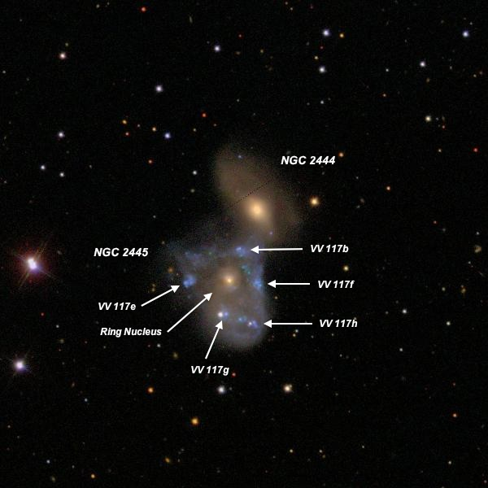

OR: 4/4/13 - 4/7/13
In Heaven with a 48-inch part 2
Steve Gottlieb
16) NGC 5403 : at 488x appeared bright, very large, excellent edge-on 5:1 NW-SE, 3.0'x0.6', broad concentration with a brighter, bulging, elongated core, ~25" diameter. The
edge-on disc tapers towards the tips. A subtle equatorial dust lane passes just east of the core region, slicing the galaxy in half, though the section east of the dust is
fainter and contains much less of the core. NGC 5403A = CGCG 191-030 lies 1.7' NE and is angled perpendicular to the major axis of NGC 5403, on line with the core. It appeared
fairly bright, fairly small, elongated 2:1 SW-NE, 0.4'x0.2', brighter core.

17) NGC 2444 /2445 = Arp 143: NGC 2444 is the northwest component of a remarkable interacting system with the multi-component ring galaxy NGC 2445 . At 488x it
appeared bright, small, slightly elongated, 30" diameter, sharply concentrated with a very high surface brightness nucleus ~12"-15" diameter. NGC 2445, directly southeast has
6 components: a bright ring nucleus and five very small HII regions which are roughly equally spaced around the nucleus (separations between 25" and 42"). The four closest (VV
117b, 117e, 117f, 117g) form a very small square with the nucleus at the center! The nucleus appears moderately bright to fairly bright, small, round, high surface brightness,
15" diameter. The five HII regions are within an irregular, triangular glow, ~1.5' diameter.
VV 117b is at the northern end of NGC 2445, just 27" N of the nucleus and 36" SSE of NGC 2444. It appeared very faint, very small, round, 8" diameter. VV 117f is situated 25"
W of the nucleus and appeared very faint to faint, very small, round, 10" diameter. VV 117h is at the SW corner (42" SW of the nucleus) and was the faintest of the 5 knots
surrounding the nucleus. It appeared extremely faint and small, round, just 5" diameter. VV 117e is at the east end (35" E of the nucleus) and appeared very faint to faint,
very small, irregularly round, ~12" diameter.
Finally, VV 117g is at the southeast corner, 30" S of the nucleus, and appeared fairly faint, very small, round, high surface brightness, 12" diameter. This object was the
brightest of 5 "knots" surrounding the nucleus, although on the SDSS it appears to be an HII region attached to a foreground star, which certainly contributed to its
brightness. In the 2009 Madore "Atlas and Catalogue of Collisional Ring Galaxies" VV 117g is identified as the second collider (C2). 18) UGCA 258: at 488x, this ring galaxy consists of several components. On the southeast end is the ring nucleus, which appeared as a very small, round, 12" knot
of high surface brightness. A diffuse glow mainly northwest of the nucleus (about 0.4') contains three brighter knots forming a ring. A short, very thin extension to the west of
the nucleus forms the brightest portion of the ring. Continuing counterclockise, there is a very small gap in the ring but on the west side is the second brightest and largest
piece (~15"x5") which forms roughly a 60° arc. After a small gap on the northwest side of the ring, a quasi-stellar knot defines the north end of the ring. There was another gap
on the east side where the ring would attach to the nucleus. Situated midway between two mag 14/14.7 stars separated by 2.5' and oriented SSW-NNE. UGCA 256 lies 13' S. 19) NGC 4303 : at 375x and 488x, the visible structure was similar to the photographic appearance! A bright bar extends north-south and is sharply concentrated
with a very small, round, intense nucleus. A bright arm is attached right at the north side of the bar and sweeps counterclockwise 180° to the south end, along the east side. A
brighter region was visible in the arm east of the nucleus, which include HII regions NGC 4303:[HK83] #35/39/41/45/49, from the Hodge-Kennicutt "Atlas of H II regions in 125
galaxies".
The western arm is attached at the southern end of the bar and sweeps north on the west side. A bright, elongated patch is on southern end of this arm, which includes #155, ~45"
SSW of the nucleus. The arm extends inside a mag 14 star in the west side of the halo [1.2' WSW of center] and then sharply dims but extends towards #242, a nearly detached
faint knot 1.2' WNW of center. A partial outer arm, not attached to the core, was easily visible on the north side, angling southwest to northeast. This short arms contains HII
region #135, a very bright, 15" knot, 1.2' NNE of center. 20) M88 : a thin spiral arm was clearly visible extending along the entire western flank of the halo and stretching 4.5' from NW to SE. This arm separates more
cleanly from the central region as it extends south, reaching a wide double star (13.7/14.3 that is superimposed on the southeast end. A fainter, very thin, straight arm was
also visible along the east side of the galaxy, extending towards the northwest. This arm hugs pretty close to the east side of the core, and separates a bit on the north
side. 21) M61 : at 375x and 488x, the visible structure was similar to the photographic appearance! A bright bar extends north-south and is sharply concentrated with a
very small, round, intense nucleus. A bright arm is attached right at the north side of the bar and sweeps counterclockwise 180° to the south end, along the east side. A
brighter region was visible in the arm east of the nucleus, which include HII regions NGC 4303:[HK83] #35/39/41/45/49, from the Hodge-Kennicutt "Atlas of H II regions in 125
galaxies".
The western arm is attached at the southern end of the bar and sweeps north on the west side. A bright, elongated patch is on southern end of this arm, which includes #155, ~45"
SSW of the nucleus. The arm extends inside a mag 14 star in the west side of the halo [1.2' WSW of center] and then sharply dims but extends towards #242, a nearly detached
faint knot 1.2' WNW of center. A partial outer arm, not attached to the core, was easily visible on the north side, angling southwest to northeast. This short arms contains HII
region #135, a very bright, 15" knot situated 1.2' NNE of center. 22) UGC 10321 = VV 129: three components of this small quadruple group (fits within a 1.5' circle) were seen at 375x in soft seeing. The dominant component (UGC
10321 NED01 = VV 129a) appeared fairly faint, small, round, 18" diameter. VV 129c is situated 0.6' N and appeared faint, very small, round, 10" diameter. On the DSS, a tidally
stretched arm of VV 129a extends towards VV 129c. Also VV 129c appears double on the SDSS image, although I only noted a single object. MCG +04-38-047 = VV 129e is the eastern
component, 1.1' NE of VV 129a. It appeared faint, very small, round, 12" diameter. VV 129d (furthest north) was not seen. VV 129b appears to be a stretched arm of VV 129a on the
SDSS. A group of 4 mag 14/15/15.5/15.5 stars is ~1.5' S. VV 129a was the site of SN 2011dl. 23) NGC 6052 = Arp 209: the main glow of this disrupted system or merger appeared fairly bright, fairly small, slightly elongated, irregular or mottled. The glow
brightens along the eastern side and very thin, faint extensions protrude along the eastern side to the north and to the south. The appearance is of an edge-on galaxy attached
to the larger, mottled western component.
Two years ago I viewed this galaxy at 488x with the 48" and took slightly more detailed notes: Attached on the SE side is a faint, elongated glow, ~22"x6", extending out from
the main portion of the system and giving the strong impression that an edge-on galaxy was involved in this merger. Also on the NE side, a fainter and broader extension or plume
was visible oriented N-S. Although these two features seemed detached, they may be part of the same partially merged edge-on. To the west of these extended features is the most
prominent region or core of the galaxy, which appeared bright, irregular round and mottled. The halo was very irregular in shape and brightness, particularly on the west side
which had a mottled, tattered appearance. 24) UGC 3730 : Arp 141 is an unusual interacting system, listed as a Ring galaxy with collider in Madore, Nelson and Petrillo's 2009 "Atlas and Catalog of
Collisional Ring Galaxies". At the north end is VV 123B = Madore C1 (collider), which appeared bright, fairly small, round, 20" diameter, sharply concentrated with a very bright
nucleus. This is the brightest component in the system. At the south edge of VV 123B (25" S of center) is VV 123A = Madore RN (Ring nucleus), which appeared fairly faint, small,
irregularly round, 15" diameter. The ring component extends south of VV 123A and appeared as a faint, moderately large, oval haze, ~60"x30", mostly evident as a brighter arc or
tail along the west side. This arc extends about as far south as a mag 14 star which is 1.5' SSW of VV 123B, though VV 123C , a small knot at the south end, was not resolved.
Viewed at 488x and 610x. 25) Shkh 18: picked up the brightest three members without much difficulty at 488x, although these are very compact galaxies with no details. Shkh 18-1 was very
faint, very small, round, 10" diameter. A mag 15.5 star is just 18" W. Shkh 18-2 appeared very faint, very small, round, 8" diameter. Finally Shkh 18-3 was extremely faint and
small, round, 6" diameter. The trio fits within a 0.6' circle! Unfortunately, NED has no distance measurements of the group. 26) NGC 2685 : this famous polar-ring galaxy (nearest and brightest) was viewed at 488x. It appeared very bright, large, very elongated 3:1 SW-NE, 1.5'x0.5',
slightly bulging center (spindle shape), high surface brightness and brighter along the central axis. Well concentrated with an intense core and surrounded by a much larger, low
surface brightness halo that increases the size to 2.5'x1.2'. The polar-ring was seen on the northwest side as a faint, low surface brightness outer loop attached to the spindle
and bulging out ~20". Periodically the the outer edge of the loop popped as a distinct arc and appeared as a semi-ring. A mag 11 star lies 2.4' N. 27) UGC 4881 : Arp 55 = "The Grasshopper" is a merger of two galaxies with a single tidal tail on the east side. At 488x it appeared bright, moderately large, very
unusual appearance with a mottled main body elongated 2:1 SW-NE, ~30"x15". On the SW end is Arp 55S = PGC 3098124, a nearly stellar knot that is the nucleus of a merging,
interacting companion. A faint, thin "arm" or "tail" is attached at the NE end and extends ~20"x5" straight south. The tail brightens slightly (perhaps an HII knot or another
merged galaxy) at the south end. This knot has the designation SDSS J091556.72+441937.5 . On the SDSS the tail curves sharply west on the south end, but this extension was not
seen. A mag 16.2 star is 45" W.
SDSS J091559.93+442034.6 = PGC 2242096 lies 0.9' NE and appeared as a very faint (V = 17.1), very low surface brightness patch, 15" diameter. Arp called this object a "filament"
of Arp 55 in his 1967 paper "Peculiar Galaxies and Radio Sources" (ApJ, 148, 321). PGC 82353 is 1.4' NE and appeared fairly faint, fairly small, slightly elongated E-W, 20"x15". PGC 2242434 lies 2.3' NW, just 27" W of a mag 14.7 star. It appeared fairly faint, fairly small, slightly elongated E-W, 20"x15". These three galaxies have a identical redshifts
as Arp 55, so are part of a small group.
28) NGC 2798 /2799 = Arp 282: NGC 2798 is very bright, large, elongated 2:1 NNW-SSE, 2.0'x1.0'. Sharply concentrated with a very bright, large core increasing to a small,
intense nucleus. A very large spiral arm extends to the NNW from the core and curves back sharply at the end counterclockwise to the SSE, fading rapidly to a very low surface
brightness and dimmng out before reaching the core. The SSE extension has an extremely low surface brightness and no arm structure was visible. Forms an interacting pair with NGC 2799 1.5' ESE. NGC 2799 was fairly bright, very thin edge-on, 6:1 NW-SE, 1.4'x0.25'. The disc is slightly warped, bending south slightly near the tips of both extensions.
The galaxy is also asymmetric, with the NW end stretched out towards the core of NGC 2798. With careful viewing, an extremely faint tidal tail appears pulled out in the
direction of the companion and it fades out just east of the core.
29) SDSS J100200.73+554247.0 : this challenging galaxy is located 2' NNE of center of the NGC 3079 , a showpiece edge-on. At 375x and 488x, an extremely faint and small glow,
less than 10" diameter, popped a couple of times at the same position, 2.0' NNE of center. The computed V mag using SDSS photometry is V = 18.6.
30) NGC 3646 : this showpiece spiral appeared bright, large, oval ~2:1 SW-NE, sharply concentrated with a very bright core. The visual treat was a prominent lens or
eye-shaped ring surrounding the core! The ring was slightly brighter in an arc along the north side. At the west edge of this arc was a very faint quasi-stellar knot (SDSS
J112141.34+201039.0, V = 17.2). Another section of the ring that stands out is along the southwest edge, with a brighter linear piece about 40" long that has several SDSS
designations. The interior of the ring is fairly dark near this section, as well as other sections, providing a good contrast with the core and ring. A very small, weak
brightening was also noted on the NE end of the ring. A mag 14 star lies 1.4' NW of center and a mag 16 star is 1' SSE of center.